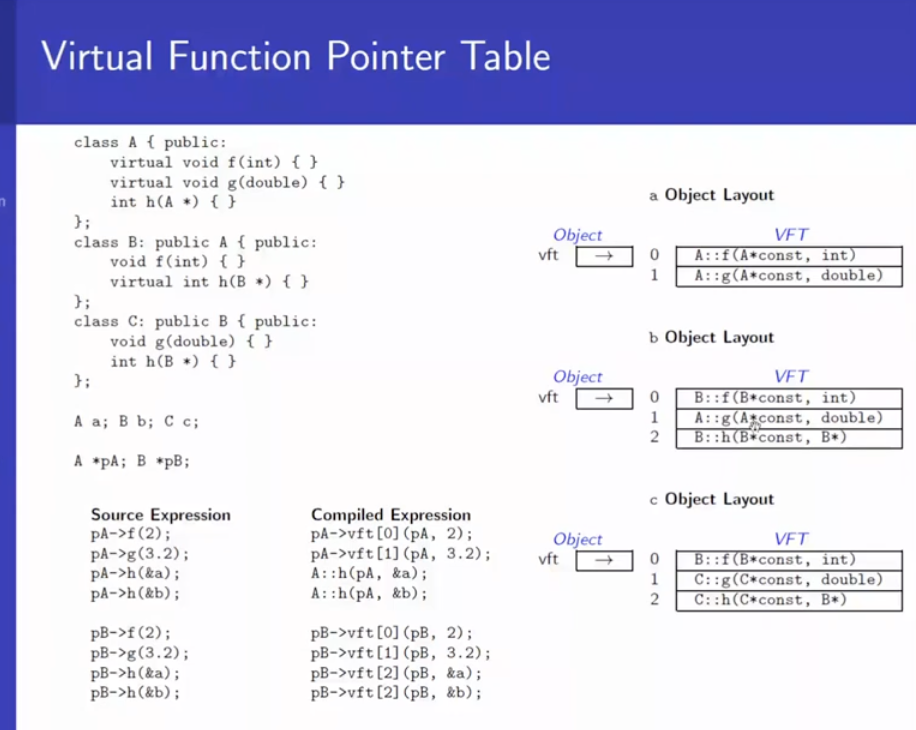

- consider a non polymorphic function f in the base class.
- and a virtual function g in the base class.
Source expression vs Compiled expression
b.f(15) -> B::f(&b, 15)p->f(25) -> B::f(p, 25)b.g(35) -> B::g(&b, 35)p->g(45) -> p->vft[0](p, 45)
object get a vft pointer.
for this class, we have a list of function pointers, an array, as we do so in C
Put pointesr to the polymorphic function one after the other
VFT table
B::g(B*const, int)
if I somehow changes this function as runtime it would call a different function
So each object of the class will have a pointer to the vft table.
for a polymorphic function, at the time of object construction, this polymorphic function has been overridden, for this class D, in the vft replaces "B::g(D* const, int)" to "D::g(D* const, int)"
- vft is class specific.
- vft carries `Run Time type Information RTTI

Casing in C++
preserves type information in all contexts
provides clear semantics through
cast operatorsconst_cast
static_cast
reinterpret_cast
dynamic_cast
c style cast must be avoided in cpp
a
cast operatortake an expression of source type and convert to target type following the semantics.const_cast<type>(expr)- explicty overrides const and/or volatile in cast. usually does not perform computation or change value
only const_cast can be used to cast away constness or volatility.
forcibly remove the constness away. This is risky, but just search for const_cast in the code base and see if it is used correctly.
This may beused if constant object, but we have all setter, so we temporarily remove the constness and use the set method.
can't cast an object though. has to be a pointer or reference. Can't change actual object type.